Krümelbahn
KrümelbahnModellbahnaktivitäten
Es ist unschwer zu erkennen - ein großes Hobby von mir sind die Eisenbahnen im Großen und im Kleinen.
Modellbahn-Aktivitäten
Aktuell beschäftige ich mich mit Modulbau in Anlehnung an die FREMO-Norm:
- eine Kanalüberführung "Michelstädter Kanal"
 Skizze
Skizze - ein kleines Bw an einer Kurve "Bw Michelstadt" Skizze
Da auf meinen Modulen inzwischen digital gefahren wird, müssen auch die Fahrzeuge umgerüstet werden. Den Umbau und Erfahrungsberichte dazu findet man auf meiner Decoder-Seite.

Fahrzeugselbstbau (nicht nur für H0)
Modelle kaufen kann jeder - Umbau bzw. Selbstbau ist angesagt!
Auch ich habe mich auf diesem Gebiet versucht und einige (hoffentlich) interessante Um/Nach/Selbstbauten geschaffen.
Einige Umbauten erfordern Zusatzkomponenten: vom einzelnen Teil bis zum neuen Gehäuse.
Neue Gehäuse wurden mit einem CAD-Programm gezeichnet und als Messingteil geätzt.
Unbedingt weiter sagen: Saemann-Ätztechnik in Pirmasens hat hier unschätzbare Hilfe und Dienste geleistet!
| Ein Hinweis in eigener Sache: die von mir hier vorgestellten Bauanleitungen sind zum eigenen Nachbau gedacht - ich kann hier keine Einzelteile (ausgenommen: Ätzplatten auf Nachfrage) oder Fertigmodelle anbieten! Benötigte Teile sind auf den einzelnen Seiten aufgelistet. |
Ein Klick aufs Bild in der ersten Spalte öffnet eine Baubeschreibung bzw. Hinweise, alle Fotos/Zeichnungen © Copyright by M.Zimmermann
| Akkutriebwagen: fahrbare Ladestation
Basiswagen: G10 |
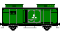 |
|
| ASF = Akkuschleppfahrzeug EL16
Basiswagen: Eigenkonstruktion |
 |
|
| (Bekohlungs-)Kran fürs Bw
Basiswagen: Krupp-Ardelt Kran |
 |
|
| Brückenprüfwagen724
Basiswagen: Res687 aus: Eisenbahn-Journal 2/97 |
 |
|
| Eichfahrzeug761 und Eichgerätewagen753
Basiswagen: Eigenkonstruktion und Gms256 |
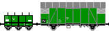 |
|
| Fäkalienwagen117
Basiswagen: G10 |
 |
Gleisstopfmaschine
Basisfahrzeug: Duomatic 07-32 |
 |
| Güterzugsteuerwagen GDS145
Basiswagen: GGths Bromberg |
 |
|
| Ölhilfszug Karlsruhe
Basiswagen: 2 Wannentender BR38/BR50 und Gms256 |
 |
|
| Öltankzug Bebra
Basiswagen: Kesselwagen und G10 |
 |
|
| Radsatztransportwagen192
Basiswagen: BTms 55 |
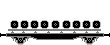 |
|
| Rottenkraftwagen-Anhänger Kla01
Basiswagen: Eigenkonstruktion |
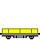 |
|
| Schneepflüge
Basiswagen: diverse |
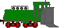 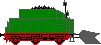 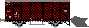 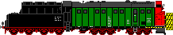 |
|
| Umrißmeßwagen746
Basiswagen: Bi29 |
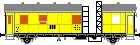 |
|
| Unkrautvertilgungszug
Basiswagen: Kastentender, Wannentender, Ghs Oppeln, Kesselwagen |
 |
|
| Umbau eines Brawa-Gelenk-O-Busses Einbau einer Lenkachse und Originalstromabnehmer Vorbild: Stadtwerke Solingen |
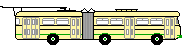 |
|
| Umbau eines Wiking-Busses Einbau einer Lenkachse Vorbild: Stadtwerke Solingen |
 |
|
| Umbau eines Strassenbahnzuges Vorbild: Stadtwerke Solingen |
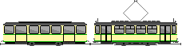 |
Werkzeuge und Hilfsmittel
Weil "gutes Werkzeug" die "halbe Arbeit" ist, wurden während der "Bauarbeiten" kleine Hilfsmittel entwickelt:
| Kupplungs- und Pufferlehre | Höhenlehre | modularer Rollenprüfstand | Spurlehre |
|---|---|---|---|
|
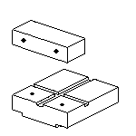 |
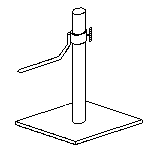 auch in Verbindung mit der Kupplungslehre einsetzbar |
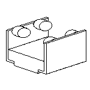 |
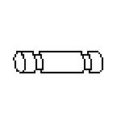 |

;){kind=link}
){kind=link}
Wie erkennbar, interessieren mich hier in der Hauptsache (nicht alltägliche) Bahndienstfahrzeuge / Werkstattwagen.
Zum diesem Thema suche ich ständig weitere
(Einsätze, Stationierungen u.s.w.).